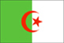

{kind=link}

|
Algeria |  |
| Introduction Geography People Government Economy Communications Transportation Military Transnational Issues | ||
|
|
||
| Algeria | Introduction | Top of Page |
| Background: | After a century of rule by France, Algeria became independent in 1962. The surprising first round success of the fundamentalist FIS (Islamic Salvation Front) party in December 1991 balloting caused the army to intervene, crack down on the FIS, and postpone the subsequent elections. The FIS response has resulted in a continuous low-grade civil conflict with the secular state apparatus, which nonetheless has allowed elections featuring pro-government and moderate religious-based parties. FIS's armed wing, the Islamic Salvation Army, disbanded itself in January 2000 and many armed militants surrendered under an amnesty program designed to promote national reconciliation. Nevertheless, residual fighting continues. Other concerns include large-scale unemployment and the need to diversify the petroleum-based economy. |
| Algeria | Geography | Top of Page |
| Location: | Northern Africa, bordering the Mediterranean Sea, between Morocco and Tunisia |
| Geographic coordinates: | 28 00 N, 3 00 E |
| Map references: | Africa |
| Area: |
total:
2,381,740 sq km
land: 2,381,740 sq km water: 0 sq km |
| Area - comparative: | slightly less than 3.5 times the size of Texas |
| Land boundaries: |
total:
6,343 km
border countries: Libya 982 km, Mali 1,376 km, Mauritania 463 km, Morocco 1,559 km, Niger 956 km, Tunisia 965 km, Western Sahara 42 km |
| Coastline: | 998 km |
| Maritime claims: |
exclusive fishing zone:
32-52 NM
territorial sea: 12 NM |
| Climate: | arid to semiarid; mild, wet winters with hot, dry summers along coast; drier with cold winters and hot summers on high plateau; sirocco is a hot, dust/sand-laden wind especially common in summer |
| Terrain: | mostly high plateau and desert; some mountains; narrow, discontinuous coastal plain |
| Elevation extremes: |
lowest point:
Chott Melrhir -40 m
highest point: Tahat 3,003 m |
| Natural resources: | petroleum, natural gas, iron ore, phosphates, uranium, lead, zinc |
| Land use: |
arable land:
3%
permanent crops: 0% permanent pastures: 13% forests and woodland: 2% other: 82% (1993 est.) |
| Irrigated land: | 5,550 sq km (1993 est.) |
| Natural hazards: | mountainous areas subject to severe earthquakes; mud slides |
| Environment - current issues: | soil erosion from overgrazing and other poor farming practices; desertification; dumping of raw sewage, petroleum refining wastes, and other industrial effluents is leading to the pollution of rivers and coastal waters; Mediterranean Sea, in particular, becoming polluted from oil wastes, soil erosion, and fertilizer runoff; inadequate supplies of potable water |
| Environment - international agreements: |
party to:
Biodiversity, Climate Change, Desertification, Endangered Species, Environmental Modification, Hazardous Wastes, Law of the Sea, Ozone Layer Protection, Ship Pollution, Wetlands
signed, but not ratified: Nuclear Test Ban |
| Geography - note: | second-largest country in Africa (after Sudan) |
| Algeria | People | Top of Page |
| Population: | 31,736,053 (July 2001 est.) |
| Age structure: |
0-14 years:
34.21% (male 5,528,755; female 5,328,083)
15-64 years: 61.72% (male 9,901,319; female 9,687,449) 65 years and over: 4.07% (male 594,973; female 695,474) (2001 est.) |
| Population growth rate: | 1.71% (2001 est.) |
| Birth rate: | 22.76 births/1,000 population (2001 est.) |
| Death rate: | 5.22 deaths/1,000 population (2001 est.) |
| Net migration rate: | -0.45 migrant(s)/1,000 population (2001 est.) |
| Sex ratio: |
at birth:
1.04 male(s)/female
under 15 years: 1.04 male(s)/female 15-64 years: 1.02 male(s)/female 65 years and over: 0.86 male(s)/female total population: 1.02 male(s)/female (2001 est.) |
| Infant mortality rate: | 40.56 deaths/1,000 live births (2001 est.) |
| Life expectancy at birth: |
total population:
69.95 years
male: 68.6 years female: 71.34 years (2001 est.) |
| Total fertility rate: | 2.72 children born/woman (2001 est.) |
| HIV/AIDS - adult prevalence rate: | 0.07% (1999 est.) |
| HIV/AIDS - people living with HIV/AIDS: | NA |
| HIV/AIDS - deaths: | NA |
| Nationality: |
noun:
Algerian(s)
adjective: Algerian |
| Ethnic groups: | Arab-Berber 99%, European less than 1% |
| Religions: | Sunni Muslim (state religion) 99%, Christian and Jewish 1% |
| Languages: | Arabic (official), French, Berber dialects |
| Literacy: |
definition:
age 15 and over can read and write
total population: 61.6% male: 73.9% female: 49% (1995 est.) |
| Algeria | Government | Top of Page |
| Country name: |
conventional long form:
People's Democratic Republic of Algeria
conventional short form: Algeria local long form: Al Jumhuriyah al Jaza'iriyah ad Dimuqratiyah ash Sha'biyah local short form: Al Jaza'ir |
| Government type: | republic |
| Capital: | Algiers |
| Administrative divisions: | 48 provinces (wilayas, singular - wilaya); Adrar, Ain Defla, Ain Temouchent, Alger, Annaba, Batna, Bechar, Bejaia, Biskra, Blida, Bordj Bou Arreridj, Bouira, Boumerdes, Chlef, Constantine, Djelfa, El Bayadh, El Oued, El Tarf, Ghardaia, Guelma, Illizi, Jijel, Khenchela, Laghouat, Mascara, Medea, Mila, Mostaganem, M'Sila, Naama, Oran, Ouargla, Oum el Bouaghi, Relizane, Saida, Setif, Sidi Bel Abbes, Skikda, Souk Ahras, Tamanghasset, Tebessa, Tiaret, Tindouf, Tipaza, Tissemsilt, Tizi Ouzou, Tlemcen |
| Independence: | 5 July 1962 (from France) |
| National holiday: | Revolution Day, 1 November (1954) |
| Constitution: | 19 November 1976, effective 22 November 1976; revised 3 November 1988, 23 February 1989, and 28 November 1996; note - referendum approving the revisions of 28 November 1996 was signed into law 7 December 1996 |
| Legal system: | socialist, based on French and Islamic law; judicial review of legislative acts in ad hoc Constitutional Council composed of various public officials, including several Supreme Court justices; has not accepted compulsory ICJ jurisdiction |
| Suffrage: | 18 years of age; universal |
| Executive branch: |
chief of state:
President Abdelaziz BOUTEFLIKA (since 28 April 1999)
head of government: Prime Minister Ali BENFLIS (since 26 August 2000) cabinet: Cabinet of Ministers appointed by the president elections: president elected by popular vote for a five-year term; election last held 15 April 1999 (next to be held NA April 2004); prime minister appointed by the president election results: Abdelaziz BOUTEFLIKA elected president; percent of vote - Abdelaziz BOUTEFLIKA over 70%; note - his six opposing candidates withdrew on the eve of the election citing electoral fraud |
| Legislative branch: |
bicameral Parliament consists of the National People's Assembly or Al-Majlis Ech-Chaabi Al-Watani (380 seats; members elected by popular vote to serve five-year terms) and the Council of Nations (144 seats; one-third of the members appointed by the president, two-thirds elected by indirect vote; members serve six-year terms; the constitution requires half the council to be renewed every three years)
elections: National People's Assembly - last held 5 June 1997 (next to be held NA 2002); Council of Nations - last held 30 December 2000 (next to be held NA 2003) election results: National People's Assembly - percent of vote by party - RND 40.8%, MSP 18.2%, FLN 16.8%, Nahda Movement 8.9%, FFS 5%, RCD 5%, PT 1.1%, Progressive Republican Party 0.8%, Union for Democracy and Liberty 0.3%, Social Liberal Party 0.3%, independents 2.8%; seats by party - RND 155, MSP 69, FLN 64, Nahda Movement 34, FFS 19, RCD 19, PT 4, Progressive Republican Party 3, Union for Democracy and Liberty 1, Social Liberal Party 1, independents 11; Council of Nations - percent of vote by party - NA%; seats by party - RND 79, FLN 12, FFS 4, MSP 1 (remaining 48 seats appointed by the president, party breakdown NA) |
| Judicial branch: | Supreme Court or Cour Supreme |
| Political parties and leaders: |
Democratic National Rally or RND [Ahmed OUYAHIA, chairman]; Islamic Salvation Front or FIS (outlawed April 1992) [Ali BELHADJ and Dr. Abassi MADANI (imprisoned), Rabeh KEBIR (self-exile in Germany)]; Movement of a Peaceful Society or MSP [Mahfoud NAHNAH, chairman]; National Liberation Front or FLN [Boualem BENHAMOUDA, secretary general]; Progressive Republican Party [Khadir DRISS]; Rally for Culture and Democracy or RCD [Said SAADI, secretary general]; Renaissance Movement or EnNahda Movement [Lahbib ADAMI]; Social Liberal Party or PSL [Ahmed KHELIL]; Socialist Forces Front or FFS [Hocine Ait AHMED, secretary general (self-exile in Switzerland)]; Union for Democracy and Liberty [Mouley BOUKHALAFA]; Workers Party or PT [Louisa HANOUN]
note: a party law banning political parties based on religion was enacted in March 1997 |
| Political pressure groups and leaders: | NA |
| International organization participation: | ABEDA, AfDB, AFESD, AL, AMF, AMU, CCC, ECA, FAO, G-15, G-19, G-24, G-77, IAEA, IBRD, ICAO, ICC, ICFTU, ICRM, IDA, IDB, IFAD, IFC, IFRCS, IHO, ILO, IMF, IMO, Inmarsat, Intelsat, Interpol, IOC, IOM, ISO, ITU, MONUC, NAM, OAPEC, OAS (observer), OAU, OIC, OPCW, OPEC, OSCE (partner), UN, UNCTAD, UNESCO, UNHCR, UNIDO, UNMEE, UPU, WHO, WIPO, WMO, WToO, WTrO (observer) |
| Diplomatic representation in the US: |
chief of mission:
Ambassador Idriss JAZAIRY
chancery: 2118 Kalorama Road NW, Washington, DC 20008 telephone: [1] (202) 265-2800 FAX: [1] (202) 667-2174 |
| Diplomatic representation from the US: |
chief of mission:
Ambassador Janet A. SANDERSON
embassy: 4 Chemin Cheikh Bachir El-Ibrahimi, Algiers mailing address: B. P. Box 549, Alger-Gare, 16000 Algiers telephone: [213] (21) 69-11-86, 69-12-55, 69-18-54, 69-38-75 FAX: [213] (21) 69-39-79 |
| Flag description: | two equal vertical bands of green (hoist side) and white; a red, five-pointed star within a red crescent centered over the two-color boundary; the crescent, star, and color green are traditional symbols of Islam (the state religion) |
| Algeria | Economy | Top of Page |
| Economy - overview: | The hydrocarbons sector is the backbone of the economy, accounting for roughly 60% of budget revenues, 30% of GDP, and over 95% of export earnings. Algeria has the fifth-largest reserves of natural gas in the world and is the second largest gas exporter; it ranks fourteenth for oil reserves. Algiers' efforts to reform one of the most centrally planned economies in the Arab world stalled in 1992 as the country became embroiled in political turmoil. Algeria's financial and economic indicators improved during the mid-1990s, in part because of policy reforms supported by the IMF and debt rescheduling from the Paris Club. Algeria's finances in 2000 benefited from the spike in oil prices and the government's tight fiscal policy, leading to a large increase in the trade surplus, the near tripling of foreign exchange reserves, and reduction in foreign debt. The government continues efforts to diversify the economy by attracting foreign and domestic investment outside the energy sector, but has had little success in reducing high unemployment and improving living standards. |
| GDP: | purchasing power parity - $171 billion (2000 est.) |
| GDP - real growth rate: | 5% (2000 est.) |
| GDP - per capita: | purchasing power parity - $5,500 (2000 est.) |
| GDP - composition by sector: |
agriculture:
11%
industry: 37% services: 52% (1999 est.) |
| Population below poverty line: | 23% (1999 est.) |
| Household income or consumption by percentage share: |
lowest 10%:
2.8%
highest 10%: 26.8% (1995) |
| Inflation rate (consumer prices): | 2% (2000 est.) |
| Labor force: | 9.1 million (2000 est.) |
| Labor force - by occupation: | government 29%, agriculture 25%, construction and public works 15%, industry 11%, other 20% (1996 est.) |
| Unemployment rate: | 30% (1999 est.) |
| Budget: |
revenues:
$15.8 billion
expenditures: $16 billion, including capital expenditures of $5.3 billion (2001 est.) |
| Industries: | petroleum, natural gas, light industries, mining, electrical, petrochemical, food processing |
| Industrial production growth rate: | 7% (1999 est.) |
| Electricity - production: | 23.215 billion kWh (1999) |
| Electricity - production by source: |
fossil fuel:
99.14%
hydro: 0.86% nuclear: 0% other: 0% (1999) |
| Electricity - consumption: | 21.613 billion kWh (1999) |
| Electricity - exports: | 307 million kWh (1999) |
| Electricity - imports: | 330 million kWh (1999) |
| Agriculture - products: | wheat, barley, oats, grapes, olives, citrus, fruits; sheep, cattle |
| Exports: | $19.6 billion (f.o.b., 2000 est.) |
| Exports - commodities: | petroleum, natural gas, and petroleum products 97% |
| Exports - partners: | Italy 22%, US 15%, France 12%, Spain 11%, Brazil 8%, Netherlands 5% (1999) |
| Imports: | $9.2 billion (f.o.b., 2000 est.) |
| Imports - commodities: | capital goods, food and beverages, consumer goods |
| Imports - partners: | France 30%, Italy 9%, Germany 7%, Spain 6%, US 5%, Turkey 5% (1999) |
| Debt - external: | $25 billion (2000 est.) |
| Economic aid - recipient: | $100 million (1999 est.) |
| Currency: | Algerian dinar (DZD) |
| Currency code: | DZD |
| Exchange rates: | Algerian dinars per US dollar - 74,813 (January 2001), 75.260 (2000), 66.574 (1999), 58.739 (1998), 57.707 (1997), 54.749 (1996) |
| Fiscal year: | calendar year |
| Algeria | Communications | Top of Page |
| Telephones - main lines in use: | 2.3 million (1998) |
| Telephones - mobile cellular: | 33,500 (1999) |
| Telephone system: |
general assessment:
telephone density in Algeria is very low, not exceeding five telephones per 100 persons; the number of fixed main lines has been increased in the last few years to a little more than 2,000,000, but only about two-thirds of these have subscribers; much of the infrastructure is outdated and inefficient
domestic: good service in north but sparse in south; domestic satellite system with 12 earth stations (20 additional domestic earth stations are planned) international: 5 submarine cables; microwave radio relay to Italy, France, Spain, Morocco, and Tunisia; coaxial cable to Morocco and Tunisia; participant in Medarabtel; satellite earth stations - 2 Intelsat (1 Atlantic Ocean and 1 Indian Ocean), 1 Intersputnik, and 1 Arabsat (1998) |
| Radio broadcast stations: | AM 25, FM 1, shortwave 8 (1999) |
| Radios: | 7.1 million (1997) |
| Television broadcast stations: | 46 (plus 216 repeaters) (1995) |
| Televisions: | 3.1 million (1997) |
| Internet country code: | .dz |
| Internet Service Providers (ISPs): | 2 (2000) |
| Internet users: | 20,000 (2000) |
| Algeria | Transportation | Top of Page |
| Railways: |
total:
4,820 km
standard gauge: 3,664 km 1.435-m gauge (301 km electrified; 215 km double track) narrow gauge: 1,156 km 1.055-m gauge (1996) |
| Highways: |
total:
104,000 km
paved: 71,656 km (including 640 km of expressways) unpaved: 32,344 km (1996 est.) |
| Waterways: | none |
| Pipelines: | crude oil 6,612 km; petroleum products 298 km; natural gas 2,948 km |
| Ports and harbors: | Algiers, Annaba, Arzew, Bejaia, Beni Saf, Dellys, Djendjene, Ghazaouet, Jijel, Mostaganem, Oran, Skikda, Tenes |
| Merchant marine: |
total:
73 ships (1,000 GRT or over) totaling 896,911 GRT/1,047,991 DWT
ships by type: bulk 9, cargo 25, chemical tanker 7, liquefied gas 10, petroleum tanker 4, roll on/roll off 13, short-sea passenger 4, specialized tanker 1 (2000 est.) |
| Airports: | 135 (2000 est.) |
| Airports - with paved runways: |
total:
51
over 3,047 m: 9 2,438 to 3,047 m: 24 1,524 to 2,437 m: 12 914 to 1,523 m: 5 under 914 m: 1 (2000 est.) |
| Airports - with unpaved runways: |
total:
84
2,438 to 3,047 m: 3 1,524 to 2,437 m: 23 914 to 1,523 m: 40 under 914 m: 18 (2000 est.) |
| Heliports: | 1 (2000 est.) |
| Algeria | Military | Top of Page |
| Military branches: | National Popular Army, Navy, Air Force, Territorial Air Defense, National Gendarmerie |
| Military manpower - military age: | 19 years of age |
| Military manpower - availability: | males age 15-49: 8,794,622 (2001 est.) |
| Military manpower - fit for military service: | males age 15-49: 5,383,770 (2001 est.) |
| Military manpower - reaching military age annually: | males: 388,939 (2001 est.) |
| Military expenditures - dollar figure: | $1.87 billion (FY99) |
| Military expenditures - percent of GDP: | 4.1% (FY99) |
| Algeria | Transnational Issues | Top of Page |
| Disputes - international: | part of southeastern region claimed by Libya; Algeria supports exiled West Saharan Polisario Front and rejects Moroccan administration of Western Sahara |